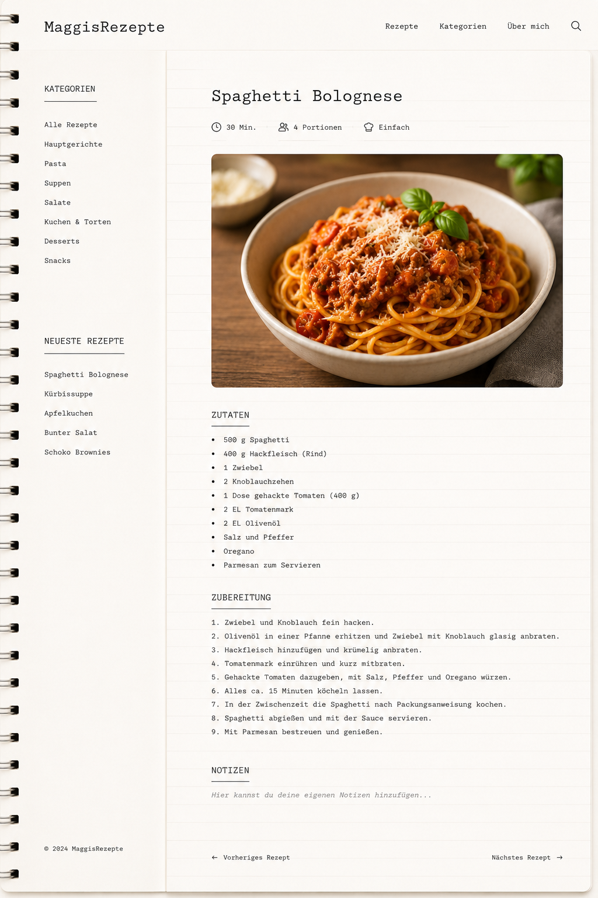

Apfelkuchen

Zutaten
- 250 g Mehl
- 150 g Butter
- 120 g Zucker
- 2 Eier
- 1 TL Backpulver
- 4 Äpfel
- Zimt
Zubereitung
- Mehl, Butter, Zucker, Eier und Backpulver zu einem Teig verkneten.
- Äpfel schälen und in Stücke schneiden.
- Teig in eine Form geben und Äpfel darauf verteilen.
- Mit Zimt bestreuen und bei 180 °C etwa 45 Minuten backen.